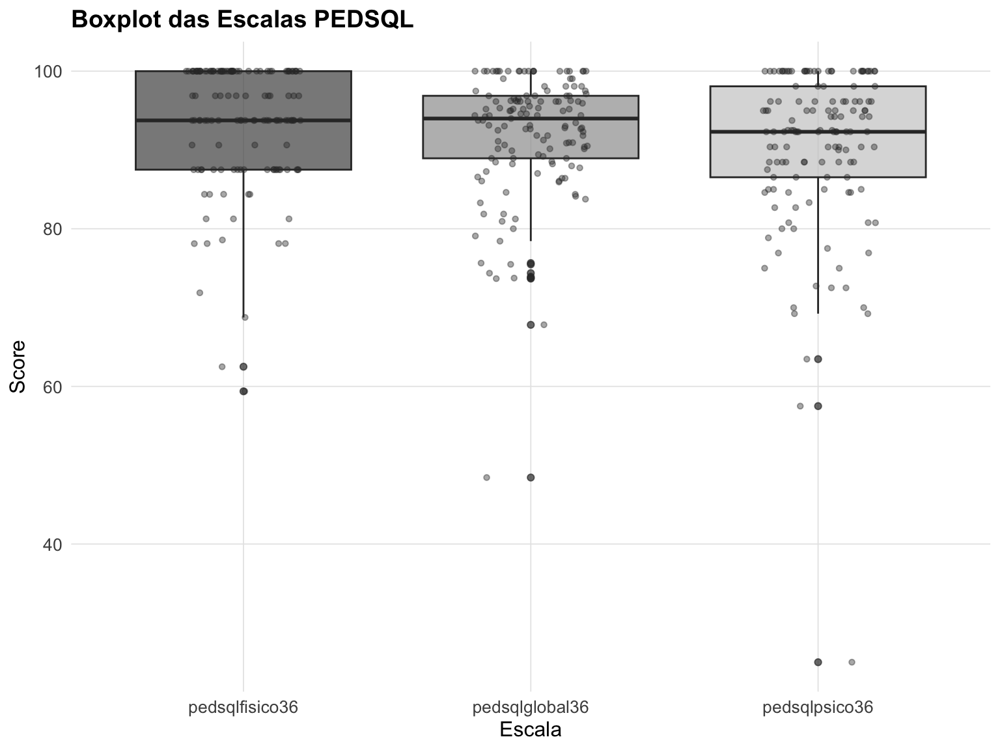

# Função para criar sumário estatísticocriar_sumario <-function(var_name, var_label) {# Calcular total da variável (excluindo NAs) total_var <- data %>%filter(!is.na(.data[[var_name]])) %>%nrow()# Dados para análise dados_analise <- data %>%filter(!is.na(.data[[var_name]]) &!is.na(pedsqlglobal36))# Calcular estatísticas descritivas resumo <- dados_analise %>%group_by(categoria = .data[[var_name]]) %>%summarise(n =n(),media =round(mean(pedsqlglobal36, na.rm =TRUE), 2),dp =round(sd(pedsqlglobal36, na.rm =TRUE), 2),.groups ='drop' ) %>%mutate(variavel = var_label,categoria =as.character(categoria),percentual =round((n /sum(n)) *100, 1) )# Teste estatístico n_grupos <-length(unique(dados_analise[[var_name]]))if(n_grupos ==2) {# Teste t para 2 grupos grupo1 <- dados_analise %>%filter(.data[[var_name]] ==unique(dados_analise[[var_name]])[1]) %>%pull(pedsqlglobal36) grupo2 <- dados_analise %>%filter(.data[[var_name]] ==unique(dados_analise[[var_name]])[2]) %>%pull(pedsqlglobal36)# Verificar se há dados suficientesif(length(grupo1) >1&length(grupo2) >1) { teste <-try(t.test(grupo1, grupo2), silent =TRUE) p_valor <-ifelse(class(teste)[1] =="try-error", NA, teste$p.value) } else { p_valor <-NA } } elseif(n_grupos >2) {# ANOVA para mais de 2 grupos teste <-try(aov(pedsqlglobal36 ~factor(.data[[var_name]]), data = dados_analise), silent =TRUE)if(class(teste)[1] !="try-error") { p_valor <-summary(teste)[[1]][["Pr(>F)"]][1] } else { p_valor <-NA } } else { p_valor <-NA }# Adicionar valor p ao resumo resumo <- resumo %>%mutate(p_valor = p_valor) %>%select(variavel, categoria, n, percentual, media, dp, p_valor)return(resumo)}# Lista de variáveis categóricas com seus labelsvars_info <-list("idademaecat"="Idade da mãe","pesocat"="Peso ao nascimento", "igcat"="Idade gestacional","partocat"="Via de parto","lme6"="Aleitamento materno exclusivo","corcat24"="Etnia","estadocivilmae24"="Estado civil da mãe","escolamaecat36"="Escolaridade da mãe","abepcat36"="Classe social","tanu"="TANU","resultadotanu"="Resultado TANU","resultqtai36"="Resultado QTAI","creche36"="Frequenta creche","ludicascat36"="Atividades lúdicas","tempotelacat36"="Tempo de tela","horacertacat36"="Horário fixo para telas","telacasa36"="Como usa telas em casa","telalimitetempocat36"="Limite de tempo de tela","telainteracaocat36"="Interação na tela","telalimiteconteudocat36"="Limite de conteúdo","genero"="Gênero","classcogbal36"="Desenvolvimento Cognitivo","classcogcomp36"="Desenvolvimento Cognitivo Composto","claslrbal36"="Linguagem Receptiva","classlebal36"="Linguagem Expressiva", "classlingcomp36"="Linguagem Composto","classmfbal36"="Motricidade Fina","classmgbal36"="Motricidade Grossa","classmotorcomp36"="Motricidade Composta")# Criar tabela completatabela_completa <-map2_dfr(names(vars_info), vars_info, criar_sumario)# Adicionar labels das categoriastabela_completa <- tabela_completa %>%mutate(categoria_label =case_when(# Idade da mãe variavel =="Idade da mãe"& categoria =="0"~"Adolescente", variavel =="Idade da mãe"& categoria =="1"~"Adulta",# Peso ao nascimento variavel =="Peso ao nascimento"& categoria =="0"~"< 2500g", variavel =="Peso ao nascimento"& categoria =="1"~"≥ 2500g",# Idade gestacional variavel =="Idade gestacional"& categoria =="0"~"< 37 semanas", variavel =="Idade gestacional"& categoria =="1"~"≥ 37 semanas",# Via de parto variavel =="Via de parto"& categoria =="0"~"Cesariana", variavel =="Via de parto"& categoria =="1"~"Vaginal/Fórceps",# Aleitamento materno variavel =="Aleitamento materno exclusivo"& categoria =="0"~"Não", variavel =="Aleitamento materno exclusivo"& categoria =="1"~"Sim",# Etnia variavel =="Etnia"& categoria =="0"~"Não branco", variavel =="Etnia"& categoria =="1"~"Branco",# Estado civil variavel =="Estado civil da mãe"& categoria =="0"~"Solteira/Divorciada", variavel =="Estado civil da mãe"& categoria =="1"~"Casada/União estável",# Escolaridade variavel =="Escolaridade da mãe"& categoria =="1"~"Ensino médio", variavel =="Escolaridade da mãe"& categoria =="2"~"Superior/Pós", variavel =="Escolaridade da mãe"& categoria =="3"~"Fundamental",# Desenvolvimento (0 = atraso, 1 = normal)str_detect(variavel, "Desenvolvimento|Linguagem|Motricidade") & categoria =="0"~"Atraso",str_detect(variavel, "Desenvolvimento|Linguagem|Motricidade") & categoria =="1"~"Normal",# Tempo de tela variavel =="Tempo de tela"& categoria =="0"~"< 1h/dia", variavel =="Tempo de tela"& categoria =="1"~"≥ 1h/dia",# Horário fixo para telas variavel =="Horário fixo para telas"& categoria =="0"~"Não", variavel =="Horário fixo para telas"& categoria =="1"~"Sim",# Limite de tempo variavel =="Limite de tempo de tela"& categoria =="0"~"Não", variavel =="Limite de tempo de tela"& categoria =="1"~"Sim",# Interação na tela variavel =="Interação na tela"& categoria =="0"~"Não", variavel =="Interação na tela"& categoria =="1"~"Sim",# Limite de conteúdo variavel =="Limite de conteúdo"& categoria =="0"~"Não", variavel =="Limite de conteúdo"& categoria =="1"~"Sim",# Para outras variáveis, manter categoria originalTRUE~ categoria ),estatistica =paste0(media, " (±", dp, ")"),n_percentual =paste0(n, " (", percentual, "%)") ) %>%group_by(variavel) %>%mutate(# Mostrar p-valor apenas na primeira linha de cada variávelp_valor_mostrar =ifelse(row_number() ==1, case_when(is.na(p_valor) ~"N/A", p_valor <0.001~"<0.001",TRUE~format(round(p_valor, 3), nsmall =3) ), "") ) %>%ungroup() %>%select(Variável = variavel, Categoria = categoria_label, `N (%)`= n_percentual, `Média (DP)`= estatistica, `p-valor`= p_valor_mostrar)# Criar tabela com gttabela_completa %>%gt(groupname_col ="Variável") %>%tab_header(title ="Análise Descritiva das Variáveis Categóricas",subtitle ="Frequência, porcentagem, estatísticas da Escala PEDSQL Global e testes de associação" ) %>%cols_align(align ="center",columns =c("N (%)", "Média (DP)", "p-valor") ) %>%tab_style(style =list(cell_fill(color ="#f8f9fa"),cell_text(weight ="bold") ),locations =cells_row_groups() ) %>%tab_style(style =list(cell_fill(color ="#d4edda"),cell_text(weight ="bold", color ="#155724") ),locations =cells_body(columns ="p-valor",rows =`p-valor`!=""& (`p-valor`=="<0.001"|as.numeric(ifelse(`p-valor`=="N/A", NA, `p-valor`)) <0.25) ) ) %>%tab_style(style =list(cell_text(color ="#6c757d") ),locations =cells_body(columns ="p-valor",rows =`p-valor`!=""&`p-valor`!="N/A"&as.numeric(`p-valor`) >=0.25 ) ) %>%tab_footnote(footnote ="DP = Desvio Padrão. Valores apresentados como Média (±Desvio Padrão). N (%) = Frequência absoluta (porcentagem). p-valor: teste t para 2 grupos, ANOVA para >2 grupos. Valores com p<0.25 destacados em verde (relevância potencial). Valores com p≥0.25 em cinza.",locations =cells_column_labels(columns ="p-valor") ) %>%opt_table_font(font ="Arial") %>%tab_options(table.font.size ="14px",heading.title.font.size ="16px",heading.subtitle.font.size ="14px" )
Análise descritiva das variáveis categóricas com PEDSQL Global
Análise Descritiva das Variáveis Categóricas
Frequência, porcentagem, estatísticas da Escala PEDSQL Global e testes de associação
Categoria
N (%)
Média (DP)
p-valor1
Idade da mãe
Adolescente
3 (2.2%)
87.11 (±12.2)
0.561
Adulta
131 (97.8%)
91.98 (±7.75)
Peso ao nascimento
< 2500g
13 (9.8%)
88.31 (±13.28)
0.307
≥ 2500g
119 (90.2%)
92.29 (±7.03)
Idade gestacional
< 37 semanas
5 (3.6%)
90.23 (±7.82)
0.645
≥ 37 semanas
132 (96.4%)
91.99 (±7.82)
Via de parto
Cesariana
60 (44.4%)
93.87 (±5.54)
0.004
Vaginal/Fórceps
75 (55.6%)
90.22 (±8.96)
Aleitamento materno exclusivo
Não
84 (62.7%)
91.56 (±6.96)
0.572
Sim
50 (37.3%)
92.42 (±9.27)
Etnia
Não branco
73 (56.6%)
92.51 (±6.83)
0.689
Branco
56 (43.4%)
92.01 (±7.21)
Estado civil da mãe
Solteira/Divorciada
52 (40.9%)
91.47 (±6.35)
0.276
Casada/União estável
75 (59.1%)
92.8 (±7.22)
Escolaridade da mãe
Ensino médio
53 (38.7%)
92.99 (±5.48)
N/A
Superior/Pós
79 (57.7%)
91.29 (±9.04)
Fundamental
5 (3.6%)
90.7 (±7.74)
Classe social
A
14 (10.2%)
95.52 (±4.6)
N/A
B
30 (21.9%)
92.12 (±5.98)
C
75 (54.7%)
91.49 (±8.88)
DE
18 (13.1%)
90.64 (±7.29)
TANU
Não
8 (5.8%)
93.79 (±3.76)
0.214
Sim
129 (94.2%)
91.81 (±7.98)
Resultado TANU
Sim
124 (100%)
91.76 (±8.09)
N/A
Resultado QTAI
NEGATIVA
83 (60.6%)
92.03 (±7.26)
0.858
POSITIVA
54 (39.4%)
91.77 (±8.63)
Frequenta creche
Não
43 (31.4%)
89.72 (±10.32)
0.062
Sim
94 (68.6%)
92.94 (±6.13)
Atividades lúdicas
adequado
102 (74.5%)
92.18 (±7.03)
0.581
inadequado
35 (25.5%)
91.19 (±9.78)
Tempo de tela
< 1h/dia
108 (78.8%)
91.33 (±8.2)
0.036
≥ 1h/dia
29 (21.2%)
94.14 (±5.65)
Horário fixo para telas
Não
85 (65.4%)
90.79 (±8.79)
0.007
Sim
45 (34.6%)
94.24 (±5.45)
Como usa telas em casa
Acompanhado pelos cuidadores (adultos)
100 (76.9%)
92.22 (±7.04)
N/A
Acompanhado por outra criança
14 (10.8%)
89.63 (±13.83)
Sozinho
16 (12.3%)
93 (±6.57)
Limite de tempo de tela
Não
45 (34.4%)
89.31 (±8.37)
0.007
Sim
86 (65.6%)
93.42 (±7.34)
Interação na tela
Não
49 (37.7%)
92.05 (±6.55)
0.921
Sim
81 (62.3%)
91.92 (±8.71)
Limite de conteúdo
Não
9 (6.8%)
90.6 (±6.15)
0.500
Sim
123 (93.2%)
92.12 (±8.01)
Gênero
Feminino
57 (41.6%)
90.69 (±9.03)
0.136
Masculino
80 (58.4%)
92.81 (±6.71)
Desenvolvimento Cognitivo
Atraso
5 (3.6%)
84.66 (±9.83)
0.162
Normal
132 (96.4%)
92.2 (±7.62)
Desenvolvimento Cognitivo Composto
Atraso
5 (3.6%)
84.66 (±9.83)
0.162
Normal
132 (96.4%)
92.2 (±7.62)
Linguagem Receptiva
Atraso
9 (6.7%)
92.72 (±8.1)
0.895
Normal
126 (93.3%)
92.35 (±6.67)
Linguagem Expressiva
Atraso
24 (17.5%)
92.08 (±7.11)
0.912
Normal
113 (82.5%)
91.9 (±7.97)
Linguagem Composto
Atraso
19 (13.9%)
90.22 (±12.67)
0.513
Normal
118 (86.1%)
92.2 (±6.74)
Motricidade Fina
Atraso
7 (5.1%)
89.38 (±6.1)
0.301
Normal
130 (94.9%)
92.07 (±7.88)
Motricidade Grossa
Atraso
10 (7.4%)
89.31 (±8.11)
0.289
Normal
126 (92.6%)
92.27 (±7.66)
Motricidade Composta
Atraso
12 (8.8%)
89.51 (±8.3)
0.307
Normal
125 (91.2%)
92.16 (±7.75)
1 DP = Desvio Padrão. Valores apresentados como Média (±Desvio Padrão). N (%) = Frequência absoluta (porcentagem). p-valor: teste t para 2 grupos, ANOVA para >2 grupos. Valores com p<0.25 destacados em verde (relevância potencial). Valores com p≥0.25 em cinza.
Variaveis Numéricas
Code
vars_numericas <-c("pedsqlfisico36", "pedsqlpsico36", "pedsqlglobal36")numericas <- data %>% dplyr::select(all_of(vars_numericas))summary(numericas) %>% knitr::kable(caption ="Sumário estatístico das variáveis numéricas/resposta") %>% kableExtra::kable_styling()
Sumário estatístico das variáveis numéricas/resposta
pedsqlfisico36
pedsqlpsico36
pedsqlglobal36
Min. : 59.38
Min. : 25.00
Min. : 48.44
1st Qu.: 87.50
1st Qu.: 86.54
1st Qu.: 88.94
Median : 93.75
Median : 92.31
Median : 93.99
Mean : 93.50
Mean : 90.36
Mean : 91.93
3rd Qu.:100.00
3rd Qu.: 98.08
3rd Qu.: 96.88
Max. :100.00
Max. :100.00
Max. :100.00
Variáveis resposta
Code
# respostas = numericasvars_resposta <-c("pedsqlfisico36", "pedsqlglobal36", "pedsqlpsico36")data_long <- data %>% dplyr::select(all_of(vars_resposta)) %>% tidyr::pivot_longer(cols =everything(), names_to ="Escala", values_to ="Score")ggplot(data_long, aes(x = Score)) +geom_histogram(aes(y =after_stat(density)), bins =15, alpha =0.7, fill ="grey70", color ="black", linewidth =0.3) +geom_density(aes(y =after_stat(density)), color ="black", linewidth =1.2) +facet_wrap(~Escala, scales ="free") +theme_minimal() +labs(title ="Distribuição das Escalas PEDSQL", x ="Score", y ="Densidade") +theme(strip.text =element_text(face ="bold"),panel.grid.minor =element_blank() )
Distribuição das Escalas PEDSQL
Teste de Normalidade
Code
# Função para calcular teste de normalidadeteste_normalidade <-function(var_name, var_data) { dados_limpos <- var_data[!is.na(var_data)] n <-length(dados_limpos)if(n <3) {return(data.frame(Escala = var_name,N = n,Media =NA,DP =NA,W_Shapiro =NA,p_valor =NA,Interpretacao ="Amostra insuficiente" )) }# Teste de Shapiro-Wilk shapiro_test <-shapiro.test(dados_limpos)# Estatísticas descritivas media <-round(mean(dados_limpos), 2) dp <-round(sd(dados_limpos), 2)# Interpretação interpretacao <-ifelse(shapiro_test$p.value <0.05, "Não Normal (p<0.05)", "Normal (p≥0.05)")return(data.frame(Escala = var_name,N = n,Media = media,DP = dp,W_Shapiro =round(shapiro_test$statistic, 4),p_valor =ifelse(shapiro_test$p.value <0.001, "<0.001", format(round(shapiro_test$p.value, 3), nsmall =3)),Interpretacao = interpretacao,stringsAsFactors =FALSE ))}# Labels das escalaslabels_escalas <-c("pedsqlfisico36"="PEDSQL Físico","pedsqlpsico36"="PEDSQL Psicossocial", "pedsqlglobal36"="PEDSQL Global")# Aplicar teste para cada escalaresultados_normalidade <-map2_dfr( vars_resposta,map(vars_resposta, ~data[[.x]]), teste_normalidade) %>%mutate(Escala = labels_escalas[Escala] )# Criar tabelaresultados_normalidade %>%gt() %>%tab_header(title ="Teste de Normalidade das Escalas PEDSQL",subtitle ="Teste de Shapiro-Wilk para verificação dos pressupostos" ) %>%cols_label(W_Shapiro ="W (Shapiro-Wilk)",p_valor ="p-valor",Interpretacao ="Interpretação" ) %>%cols_align(align ="center",columns =c("N", "Media", "DP", "W_Shapiro", "p_valor") ) %>%tab_style(style =list(cell_fill(color ="#ffe6e6"),cell_text(weight ="bold", color ="#d73027") ),locations =cells_body(columns ="Interpretacao",rows =str_detect(Interpretacao, "Não Normal") ) ) %>%tab_style(style =list(cell_fill(color ="#d4edda"),cell_text(weight ="bold", color ="#155724") ),locations =cells_body(columns ="Interpretacao",rows =str_detect(Interpretacao, "Normal") ) ) %>%tab_footnote(footnote ="H0: Os dados seguem distribuição normal. p<0.05 = rejeita H0 (não normal). Interpretação destacada: Verde = Normal, Vermelho = Não Normal.",locations =cells_column_labels(columns ="p_valor") ) %>%opt_table_font(font ="Arial") %>%tab_options(table.font.size ="14px",heading.title.font.size ="16px" )
Teste de Normalidade de Shapiro-Wilk para as Escalas PEDSQL
Teste de Normalidade das Escalas PEDSQL
Teste de Shapiro-Wilk para verificação dos pressupostos
Escala
N
Media
DP
W (Shapiro-Wilk)
p-valor1
Interpretação
PEDSQL Físico
137
93.50
7.91
0.7920
<0.001
Não Normal (p<0.05)
PEDSQL Global
137
91.93
7.80
0.8350
<0.001
Não Normal (p<0.05)
PEDSQL Psicossocial
137
90.36
10.40
0.7887
<0.001
Não Normal (p<0.05)
1 H0: Os dados seguem distribuição normal. p<0.05 = rejeita H0 (não normal). Interpretação destacada: Verde = Normal, Vermelho = Não Normal.
Boxplot das Escalas PEDSQL
Code
ggplot(data_long, aes(x = Escala, y = Score, fill = Escala)) +geom_boxplot(alpha =0.7) +scale_fill_grey(start =0.3, end =0.8) +theme_minimal() +labs(title ="Boxplot das Escalas PEDSQL", x ="Escala", y ="Score") +theme(legend.position ="none")
Boxplot das Escalas PEDSQL
Associação das variáveis resposta (pedsqlglobal36)
Por gênero
Code
# Removi a tabela pois achei confusa a interpretacao da mediana/quantis# data %>%# select(genero, all_of(vars_resposta)) %>%# tbl_summary(by = genero, missing = "no") %>%# add_overall() %>%# bold_labels()
Code
ggplot(data, aes(x = genero, y = pedsqlglobal36, fill = genero)) +geom_boxplot() +scale_fill_grey(start =0.4, end =0.7) +theme_minimal() +labs(title ="PEDSQL Global por Gênero", x ="Gênero", y ="PEDSQL Global", fill ="Gênero")

PEDSQL Global por Gênero
Por Faixa Etária Materna
Code
idademaecat_label <-c("1"="Adulta", "0"="Adolescente")data %>% dplyr::mutate(idademaecat_lab =recode(as.character(idademaecat), !!!idademaecat_label)) %>%ggplot(aes(x = idademaecat_lab, y = pedsqlglobal36, fill = idademaecat_lab)) +geom_boxplot() +scale_fill_grey(start =0.4, end =0.7) +theme_minimal() +labs(title ="PEDSQL Global por Faixa Etária Materna",x ="Faixa Etária Materna",y ="PEDSQL Global",fill ="Faixa Etária Materna" ) +theme(legend.position ="bottom")
PEDSQL Global por Faixa Etária Materna
Por Idade Gestacional
Code
igcat_labels <-c("0"="< 37 semanas", "1"=">= 37 semanas")data %>%mutate(igcat_lab =recode(as.character(igcat), !!!igcat_labels)) %>%ggplot(aes(x = igcat_lab, y = pedsqlglobal36, fill = igcat_lab)) +geom_boxplot() +scale_fill_grey(start =0.4, end =0.7) +theme_minimal() +labs(title ="PEDSQL Global por Idade Gestacional",x ="Idade Gestacional",y ="PEDSQL Global",fill ="Idade Gestacional" ) +theme(legend.position ="bottom")
PEDSQL Global por Idade Gestacional
Por Tipo de Parto
Code
partocat_labels <-c("0"="Cesárea", "1"="Vaginal/Forcéps")data %>%mutate(partocat_lab =recode(as.character(partocat), !!!partocat_labels)) %>%ggplot(aes(x = partocat_lab, y = pedsqlglobal36, fill = partocat_lab)) +geom_boxplot() +scale_fill_grey(start =0.4, end =0.7) +theme_minimal() +labs(title ="PEDSQL Global por Tipo de Parto",x ="Tipo de Parto",y ="PEDSQL Global",fill ="Tipo de Parto" ) +theme(legend.position ="bottom")
PEDSQL Global por Tipo de Parto
Boxplots das Variáveis Categóricas vs PEDSQL Global
Variáveis Significativas (p < 0.05)
Via de Parto (p = 0.004)
Code
partocat_labels <-c("0"="Cesariana", "1"="Vaginal/Fórceps")data %>%filter(!is.na(partocat) &!is.na(pedsqlglobal36)) %>%mutate(partocat_lab =recode(as.character(partocat), !!!partocat_labels)) %>%ggplot(aes(x = partocat_lab, y = pedsqlglobal36, fill = partocat_lab)) +geom_boxplot(alpha =0.7) +geom_jitter(width =0.2, alpha =0.5, size =1.5) +scale_fill_grey(start =0.4, end =0.7) +theme_minimal() +labs(title ="PEDSQL Global por Via de Parto",subtitle ="p = 0.004 (significativo)",x ="Via de Parto",y ="PEDSQL Global",fill ="Via de Parto" ) +theme(legend.position ="none")
PEDSQL Global por Via de Parto
Tempo de Tela (p = 0.036)
Code
tempotela_labels <-c("0"="< 1h/dia", "1"="≥ 1h/dia")data %>%filter(!is.na(tempotelacat36) &!is.na(pedsqlglobal36)) %>%mutate(tempotela_lab =recode(as.character(tempotelacat36), !!!tempotela_labels)) %>%ggplot(aes(x = tempotela_lab, y = pedsqlglobal36, fill = tempotela_lab)) +geom_boxplot(alpha =0.7) +geom_jitter(width =0.2, alpha =0.5, size =1.5) +scale_fill_grey(start =0.4, end =0.7) +theme_minimal() +labs(title ="PEDSQL Global por Tempo de Tela",subtitle ="p = 0.036 (significativo)",x ="Tempo de Tela por Dia",y ="PEDSQL Global",fill ="Tempo de Tela" ) +theme(legend.position ="none")
PEDSQL Global por Tempo de Tela
Horário Fixo para Telas (p = 0.007)
Code
horacerta_labels <-c("0"="Não", "1"="Sim")data %>%filter(!is.na(horacertacat36) &!is.na(pedsqlglobal36)) %>%mutate(horacerta_lab =recode(as.character(horacertacat36), !!!horacerta_labels)) %>%ggplot(aes(x = horacerta_lab, y = pedsqlglobal36, fill = horacerta_lab)) +geom_boxplot(alpha =0.7) +geom_jitter(width =0.2, alpha =0.5, size =1.5) +scale_fill_grey(start =0.4, end =0.7) +theme_minimal() +labs(title ="PEDSQL Global por Horário Fixo para Telas",subtitle ="p = 0.007 (significativo)",x ="Horário Fixo para Telas",y ="PEDSQL Global",fill ="Horário Fixo" ) +theme(legend.position ="none")
PEDSQL Global por Horário Fixo para Telas
Limite de Tempo de Tela (p = 0.007)
Code
limite_labels <-c("0"="Não", "1"="Sim")data %>%filter(!is.na(telalimitetempocat36) &!is.na(pedsqlglobal36)) %>%mutate(limite_lab =recode(as.character(telalimitetempocat36), !!!limite_labels)) %>%ggplot(aes(x = limite_lab, y = pedsqlglobal36, fill = limite_lab)) +geom_boxplot(alpha =0.7) +geom_jitter(width =0.2, alpha =0.5, size =1.5) +scale_fill_grey(start =0.4, end =0.7) +theme_minimal() +labs(title ="PEDSQL Global por Limite de Tempo de Tela",subtitle ="p = 0.007 (significativo)",x ="Limite de Tempo pelos Cuidadores",y ="PEDSQL Global",fill ="Limite de Tempo" ) +theme(legend.position ="none")